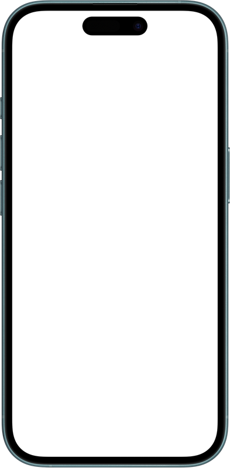

CLIENT WEB DESIGN & UX
Mountain & Forge
A collaborative web design project for a local blacksmith business, combining traditional craftsmanship with a modern digital storefront and brand experience.

THE PROJECT
Designing a digital experience for a traditional craft.
Mountain & Forge was a collaborative university project created for a local blacksmith business. Our team was tasked with developing the design and structure for a complete website that could communicate the character of the business while providing customers with a modern and approachable online experience.
The project required us to think beyond individual screens and consider the website as a complete experience. We needed to establish a visual identity, determine how information would be organized, plan the layout of the site, and document how the interface would function across different pages and experiences.
THE CHALLENGE
Bringing craftsmanship into a modern digital space.
A blacksmith's work is highly physical and handcrafted, while a website is entirely digital. One of the central challenges was figuring out how the interface could communicate that sense of craftsmanship without making the experience feel outdated.
The website needed to feel professional enough to support an actual business while still maintaining a strong sense of personality. Our team also had to think about how customers would discover the business, browse its work, understand the products and services, and ultimately interact with the site.
This made the visual design particularly important. Rather than treating the website as a collection of individual pages, we worked toward a consistent system of color, typography, spacing, imagery, and layout.
MY ROLE
Where I contributed.
I worked as part of the design team, focusing primarily on the interface and visual structure of the website.
UI Design
Developed the visual interface and helped establish the overall look and feel of the website, including visual hierarchy, spacing, components, and page presentation.
Wireframing
Created wireframes to explore page structure and determine how content and functionality could be organized before moving into the visual design.
Website Layout
Planned the placement and hierarchy of content throughout the website, helping establish how users would move through the different sections and pages.
Layout Diagrams
Created layout diagrams that documented the intended structure of the website and helped communicate design decisions to the rest of the team.
Team Collaboration
Worked alongside the rest of the team throughout the design process, combining individual contributions into one cohesive website concept.
Design Documentation
Contributed to the extensive design documentation created for the project, helping establish a clear reference for the final website.
DESIGN DIRECTION
Building a visual language around the forge.
The visual direction needed to connect the digital experience with the physical nature of blacksmithing while still feeling clean and usable as a modern website.
We explored how color, typography, imagery, and layout could work together to create a visual identity that felt grounded in the business without relying entirely on traditional or literal blacksmith imagery.
COLOR PALETTE
A practical color system built around the brand.
The Mountain & Forge color system uses black, white, brown, grey, and dark green as the primary visual foundation for backgrounds, text, and interface elements. Additional colors are reserved for functional states, helping users quickly understand order status and system feedback.
#FFFFFF
#000000
#1B4332
#6F4E37
#D3D3D3
#FFD966
#CC5500
#00A000
#FF0000

The system color palette and its relationship between primary, secondary, accent, order-status, and error colors.
TYPOGRAPHY & LAYOUT
Establishing consistency through type, spacing, and scale.
The Mountain & Forge design system uses a consistent set of spacing, sizing, and typography rules to create a predictable and accessible interface across the website.
8px Grid
An 8px grid system was used to maintain consistent spacing and alignment throughout the interface.
16px Minimum
Interactive touch targets use a minimum size of 16px.
24px
A 24px margin value was used as part of the spacing system.
24px
A 24px padding value was used to create consistent internal spacing within interface elements.
16px
Body content uses a default font size of 16px.
31px
Large headings use a 31px type size to establish hierarchy.
Arial Regular — 16px
Arial — 14px for captions
WIREFRAMES & LAYOUT
Defining the structure before the final interface.
Before focusing on the final visual treatment, our team worked through the structure of the website using wireframes and layout diagrams.
This stage allowed us to focus on hierarchy, content placement, navigation, and functionality without getting distracted by the final visual styling. It also gave the team a shared reference point as we continued developing the design.

Early website wireframe.

Additional page structure and layout exploration.
DESIGN DOCUMENTATION
Documenting the experience from concept to interface.
One of the major deliverables for the project was a 46-page design document covering the website's structure, functionality, visual direction, and design decisions.
Creating this documentation forced us to think through the website beyond individual mockups. Every major part of the experience needed to be explained and organized so that the final direction could be understood by the entire team.
I contributed to this process through UI design, wireframes, website layout, and layout diagrams, helping turn the team's ideas into a documented and cohesive design system.


THE FINAL WEBSITE
Bringing the design documentation into a working experience.
After completing the design documentation, the project moved into website implementation.
Due to the project's time constraints, the final website was implemented using Lovable based on the team's completed design documentation. Rather than treating the implementation as a replacement for the design process, the documented layouts and visual direction provided the foundation for the final website.
This part of the project gave me a useful perspective on the relationship between design and implementation. A strong design needs to communicate enough information that another person or tool can understand the intended structure, hierarchy, and visual direction.
VIEW WEBSITE →MOBILE EXPERIENCE
Designing beyond the desktop screen.
The website also needed to translate into a mobile experience without losing the visual hierarchy established in the desktop design.
For the portfolio presentation, I wanted to show the mobile experience in a way that felt more dynamic than a traditional screenshot. A scrolling screen recording allows the interaction and responsive layout to be seen in motion while keeping the presentation visually focused.
RESPONSIVE DESIGN
The website in motion.
The video below demonstrates the mobile version of the Mountain & Forge website as a user scrolls through the experience.

REFLECTION
What I took away from the project.
Mountain & Forge gave me experience designing for an actual
client while working within the constraints of a larger
collaborative project. The project strengthened my
understanding of wireframing, UI design, layout planning,
visual systems, and design documentation.
The 50-page design document was especially valuable because
it required the team to think through the experience in much
greater detail than we would have through individual mockups
alone. It also demonstrated how important clear documentation
can be when a design eventually needs to be translated into
a working product.
Most importantly, the project taught me how to contribute
specialized design work within a team while still thinking
about the website as one cohesive experience.